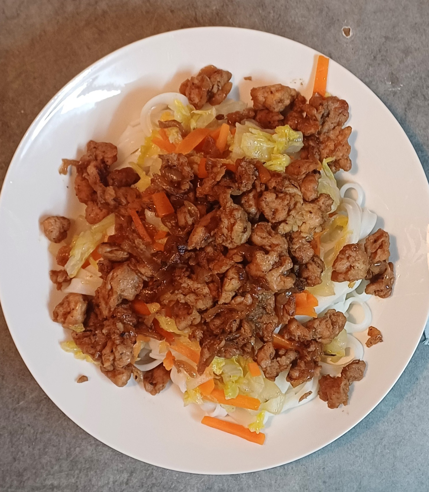
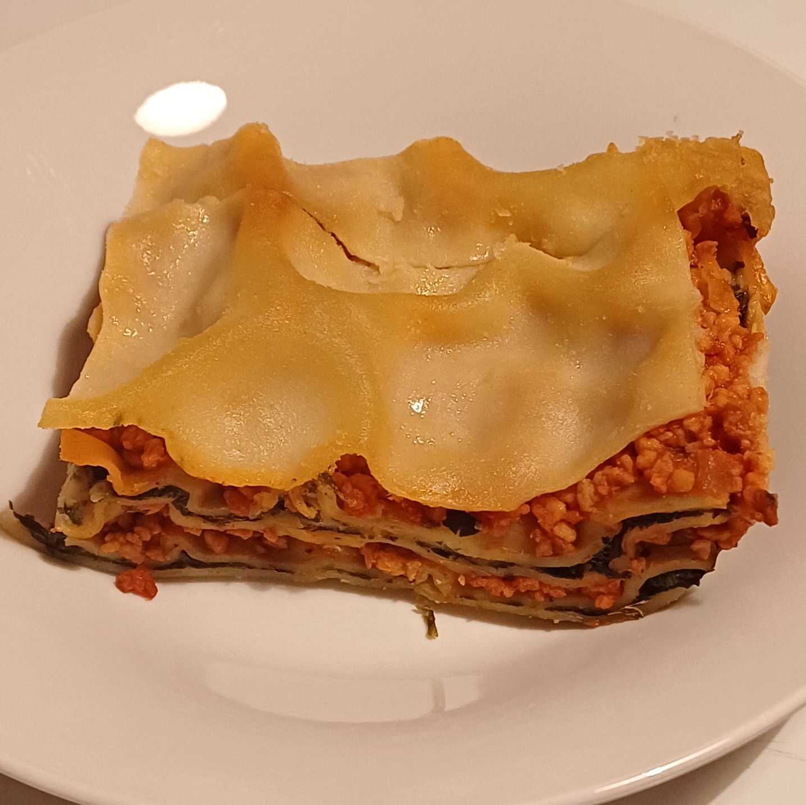
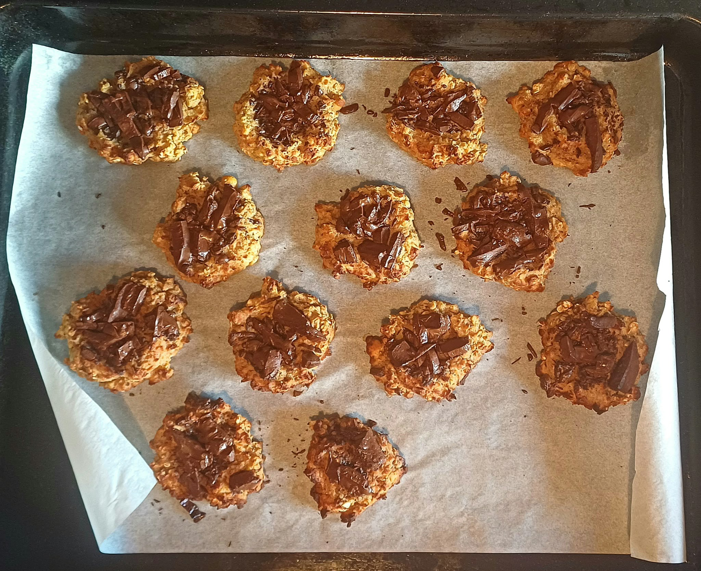

Recettes génialissimes
- Végétales
- Pas chères
- Faciles à faire
Vous trouverez des recettes :
Apéros
Entrées
Plats
Épisode 1 : Les nouilles chinoises

Pour 6 personnes — Temps estimé : 45 minutes
Ingrédients
- Protéines de soja texturées (grandes)
- 400 g de nouilles de riz
- Sauce soja claire
- 2 oignons
- 3 carottes
- 1/2 chou chinois
- Huile de colza (ou olive, tournesol)
Recette
- Émincer les oignons et les faire revenir dans une poêle avec un peu d'huile.
- Faire gonfler les protéines de soja dans de l'eau bouillante, puis les essorer.
- Cuire les nouilles de riz suivant les instructions du paquet.
- Ajouter les protéines de soja aux oignons et assaisonner avec de la sauce soja.
- Couper les carottes en bâtonnets et le chou chinois en morceaux, cuire rapidement puis ajouter le jus à la préparation.
- Servir les nouilles dans des assiettes creuses, ajouter légumes, protéines et un filet de sauce soja.
Épisode 2 : Les lasagnes

Pour 6 à 8 personnes — Temps estimé : 1h
Ingrédients
- Protéines de soja texturées (petites)
- Pâtes à lasagnes
- Sauce tomate (en pot ou maison)
- 2 oignons
- 1 gousse d'ail
- 200 g d'épinards
- Lait d'amande (ou autre lait végétal)
- Farine
- Huile de colza (ou olive, tournesol)
Recette
- Émincer les oignons et hacher la gousse d'ail. Les faire revenir dans une poêle avec un peu d'huile jusqu'à ce que les oignons caramélisent.
- Faire gonfler les protéines de soja texturées dans de l'eau bouillante.
- Cuire les épinards avec un peu de lait.
- Ajouter la sauce tomate et les protéines de soja aux oignons caramélisés.
- Préparer la béchamel : réaliser un roux (farine + matière grasse) puis ajouter le lait petit à petit en remuant jusqu'à épaississement.
- Monter les lasagnes : alterner couches de béchamel, pâtes, épinards, sauce tomate, en terminant par une couche de béchamel.
- Enfourner 30–45 minutes à 200 °C.
Épisode 3 : Les pâtes aux courgettes
Pour 4 à 5 personnes — Temps estimé : 1h - Sans four
Ingrédients
- 2 grandes courgettes
- Farine
- Lait végétal
- Sel et poivre
- Curry
- Optionnel : basilic, ail, bouillon de légumes
Recette
- Peler et couper en dès les courgettes puis les mettre à cuire avec un peu d'eau. Couvrir avec un couvercle
- Séparer les courgettes cuites en deux et mixer la première moitié.
- Ajouter une pincée de sel puis de la farine jusqu'à obtenir une pâte ne collant plus aux doigts.
- Laisser reposer 10 minutes au refrigérateur.
- Ajouter l'ail, le lait végétal et le curry aux courgettes en train de cuire en remuant par moment.
- Sortir la pâte et couper des morceaux de celle ci au dessus d'un bouillon (eau salée ou eau avec un bouillon de légumes). Les sortir pour les égoutter lorsque les pâtes restent à la surface de l'eau.
- Mixer les courgettes en train de cuire (vous pouvez ajouter le basilic).
- Faire cuire les pâtes dans une poelle chaude. Vous pouvez directement ajouter la sauce et faire cuire les pâtes avec ou servir les pâtes dans une assiette puis ajouter la sauce.
Épisode 4 : Le chili sin carne
Pour 8 personnes — Temps estimé : 45 minutes - Sans four
Ingrédients
- 500g de riz
- 250g d'haricots rouges
- 5 carottes
- 2 oignons
- Tomates en morceaux ou chair de tomate en conserve ~ 300g
- 200g de protéines de soja texturées (petites)
- Épices à chili (ou 4 épices)
- Huile végétale
- Optionnel : 2 tomates, conserve de mais ~ 100g
Recette
- Couper les carottes, les oignons et les tomates puis les faire cuire dans une poelle avec un peu d'eau et d'huile.
- Faire gonfler les protéines de soja texturées (PST) dans un bol d'eau bouillante.
- Faire cuire le riz.
- Lorsque les légumes sont cuits, ajouter les PST, la sauce tomate et les épices à chili. Laisser mijoter.
- Ajouter les haricots rouges et le mais.
- Finir la cuisson et servir.
Desserts
Épisode 1 : Les cookies aux pois chiches

Pour 12 cookies — Temps estimé : 15 minutes de préparation - 10 minutes de cuisson
Ingrédients
- 250g de pois chiches
- 50/70g de flocons d'avoine
- 2 bananes mûres
- 1 cuillère de purée d'amandes (ou de beurre de cacahuètes)
- optionnel : 80g de chocolat
Recette
- Égouter les pois chiches et conserver l'aquafaba (jus présent dans les conserves de pois chiches).
- Les placer dans un mixeur avec les deux bananes en morceaux. Vous pouvez aussi les écraser à la fourchette.
- Mixer le tout.
- Placer la préparation dans un bol et ajouter les flocons d'avoines et la purée d'amande.
- Sur une plaque allant au four disposer des petits tas de pâte (vous pouvez les réaliser à l'aide de deux grandes cuillères).
- Ajouter le chocolat préalablement détaillé en morceaux.
- Enfourner 10–15 minutes à 180 °C.
Épisode 2 : La mousse au chocolat
Recette très simple antigaspi et ne nécessitant pas de four ni de cuisson.
Pour 6 à 8 portions — Temps estimé : 15 minutes de préparation - 24h de repos
Ingrédients
- 50cl d'aquafaba (jus des pois chiches)
- 120g de chocolat
Recette
- Battre l'aquafaba avec un batteur jusqu'à obtenir un mélange mousseux blanc.
- Faire fondre le chocolat à feu doux avec un peu d'eau.
- Lorsque l'aquafaba est assez ferme, ajouter le chocolat fondu et mélanger délicatement avec une maryse par exemple.
- Placer la préparation dans un bol ou dans des contenants individuels (dans les contenants individuels la mousse sera prête plus rapidement et tiendra plus longtemps).
- Mettre au frigo et laisser reposer une nuit au minimum.
- Servir dans les 3-4 jours pour une texture optimale.
Épisode 3 : Les gauffres
Pour 8 gauffres — Temps estimé : 20 minutes
Ingrédients
- 200g de farine
- 25cl de lait végétal
- 25cl d'eau
- Une cuillère à soupe d'huile végétale
- 1/2 sachet de levure chimique
Recette
- Mélanger tout les ingrédients dans un saladier jusqu'à obtenir un mélange homogène.
- Faire cuire les gauffres dans un gauffrier préalablement huilé